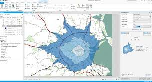
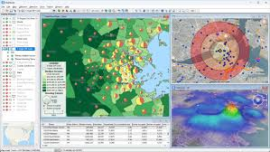
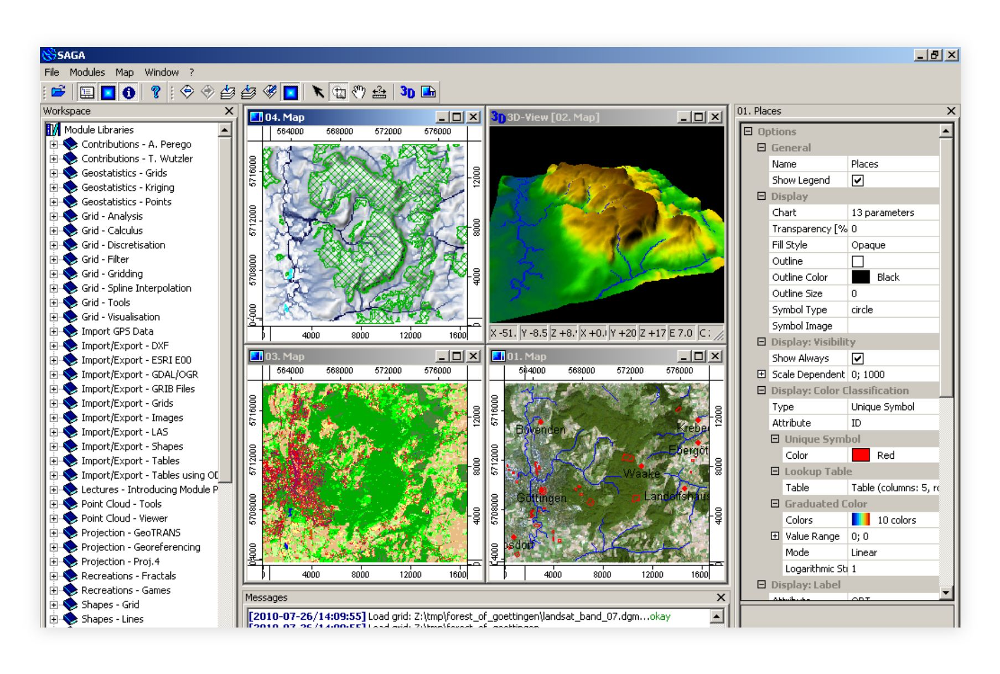
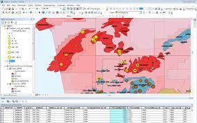

About Me
s
Hello, my name is Shivali Kumbhalkar. I am a passionate GIS Analyst with hands-on experience in spatial data management, remote sensing, photogrammetry, and geospatial analysis.
Over the years, I have successfully contributed to more than 70+ projects, ranging from cadastral mapping and volumetric analysis to advanced drone-based 3D modeling. My work focuses on delivering accurate, efficient, and innovative geospatial solutions for urban planning, environmental monitoring, and sustainable development.
Key Skills
- ArcGIS, QGIS, AutoCAD, Global Mapper
- Remote Sensing & Image Classification (NDVI, LULC)
- Photogrammetry & Drone Mapping
- Cartography, Contour Mapping, DEM/DTM
- Python for GIS Automation
- Web GIS (Google Earth Engine, Mapbox)



